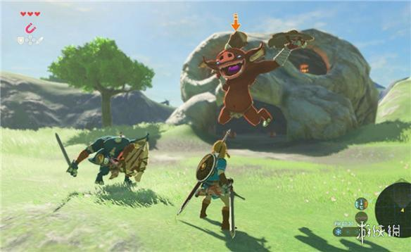

塞尔达传说荒野之息游戏中各地图的怪物有很多，那么这些怪物等级和掉落是固定的吗？今天小编就为大家带来玩家“SS－萨拉斯”分享的这一问题的答案，有需要的朋友们不妨来看看吧！
怪物等级和掉落是固定的吗？
看谷歌的视频，做过测试是怪物的强度是根据你开的神庙数量来的
后面一想这种说法也很有道理，开的神庙越多，你的血量和精力也就越高，相当于升级吧 。
以上就是小编为大家带来的全部内容，希望可以帮助到大家。
